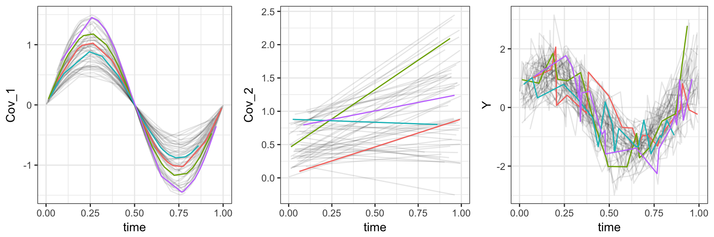
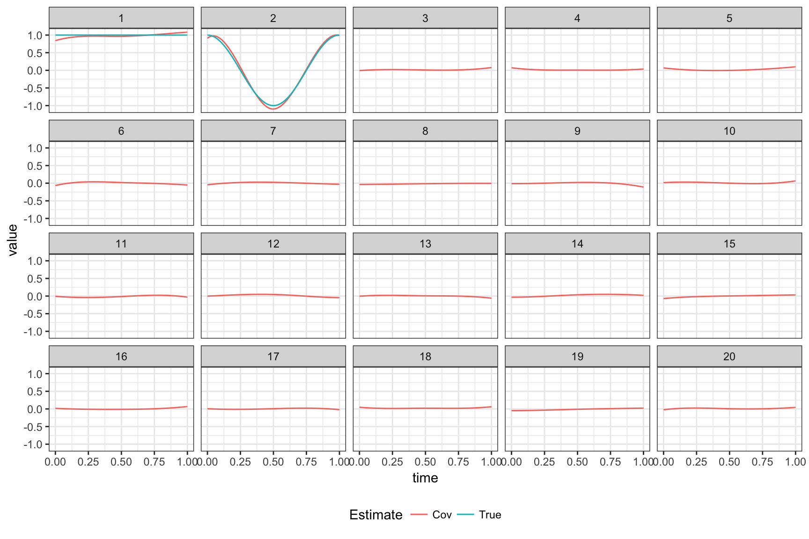

This page contains a combination of traditional lecture materials (slides) and code demonstrating the relevant methods. The short course will proceed by working through both. We will use several recent packages in our examples; see the About page for information about the package versions.
library(tidyverse)
library(vbvs.concurrent)
library(refund.shiny)Due to a lack of publicly available and easy-to-implement code for scalar-on-image regression, we focus on methods for the functional linear concurrent model.
The snippet below simulates a simple example which we will use for illustration.
## set design elements
set.seed(1)
I = 50
## coefficient functions
beta1 = function(t) { 1 }
beta2 = function(t) { cos(2*t*pi) }
psi1 = function(t) { sin(2*t*pi) }
## generate subjects and observation times
concurrent_data =
data.frame(
subj = rep(1:I, each = 20)
) %>%
mutate(time = runif(dim(.)[1])) %>%
arrange(subj, time) %>%
group_by(subj) %>%
mutate(Cov_1 = runif(1, .5, 1.5) * sin(2 * pi * time),
Cov_2 = runif(1, 0, 1) + runif(1, -.5, 2) * time,
FPC_score = rnorm(1, 0, .5),
Y = Cov_1 * beta1(time) +
Cov_2 * beta2(time) +
FPC_score * psi1(time) +
rnorm(20, 0, .5)) %>%
ungroup() %>%
dplyr::select(subj, time, Y, everything())
superfulous_covariates = matrix(rnorm(18 * I * 20), nrow = I * 20, ncol = 18)
colnames(superfulous_covariates) = paste0("Cov_", 3:20)
concurrent_data = bind_cols(concurrent_data, as.data.frame(superfulous_covariates))The plot below shows the first two predictors and the response, highlighting four subjects.
##
## Attaching package: 'gridExtra'
## The following object is masked from 'package:dplyr':
##
## combine
To fit the functional linear concurrent model with variable selection, we can use vbvs_concurrent.
fit_vbvs = vbvs_concurrent(Y ~ Cov_1 + Cov_2 + Cov_3 + Cov_4 + Cov_5 +
Cov_6 + Cov_7 + Cov_8 + Cov_9 + Cov_10 +
Cov_11 + Cov_12 + Cov_13 + Cov_14 + Cov_15 +
Cov_16 + Cov_17 + Cov_18 + Cov_19 + Cov_20 | time,
id.var = "subj", data = concurrent_data,
t.min = 0, t.max = 1, standardized = TRUE)
## Constructing Xstar; doing data organization
## Beginning Algorithm
## ..........The plot below shows true coefficients and estimates without using variable selection.

Interactive graphics show observed data, coefficient functions, and residual curves. The code below will produce such a graphic. As noted in the slides, this approach also uses FPCA to decompose residual curves as part of the overall model fitting; this decomposition can be viewed using the tool we saw previously.
plot_shiny(fit_vbvs)
plot_shiny(fit_vbvs$fpca.obj)As in all other examples, the preceding approach has tuning parameters. These can be set by hand using the v0 argument to the vbvs_concurrent function. There is also a cv_vbvs_concurrent function, and versions without variable selection.
As an alternative to the functional linear concurrent model, note that the functional linear model is a special case; by carefully constructing the data frame containing predictions, vbvs_concurrent can be used for variable selection in that setting, and is interesting to compare to other methods we’ve seen so far.